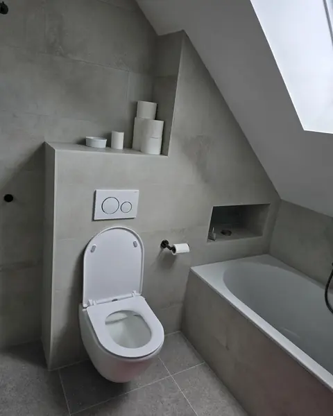

Over Meck Bouw
Martin van Eck, vakman in tien vakken.
Meck Bouw is een zelfstandig ondernemer. Bouwkunde, loodgieten, tegelzetten, timmeren, elektra, hovenierswerk, bestrating, klein metsel- en stucwerk en dakwerk: alles wat uw woning nodig heeft aan vernieuwing, verbetering of verandering. Martin werkt het liefst aan renovaties.
"Graag kijk ik met een bouwkundig oog mee naar de mogelijkheden, oplossingen en de realisatie daarvan."Martin van Eck
OpleidingBouwkunde MBO BOL 4
OpleidingLoodgieten MBO 2
OpleidingTegelzetten MBO 2
KvK66271304
Welke klus staat er bij u op de lijst?
Groot of klein: vertel wat er moet gebeuren, Martin denkt vooraf mee.